Collegium Seraphicum
Lelkigyakorlatok
2006 Pálosszentkút
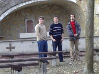
1
2
3
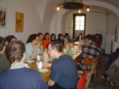
4
5
6
7
8
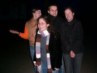
9
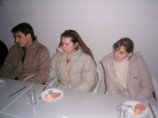
10
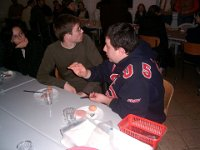
11
12
13
14
15
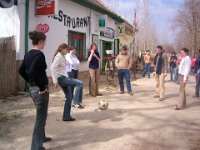
16
17
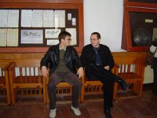
18
19
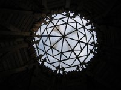
20
21
22
23
24
25
26
27
28
29
30
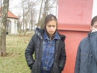
31
32
33
34
35
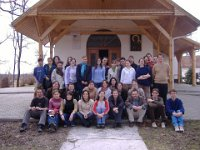
36
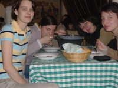
37
38
39
40
41
42
43
44
45
46
Következő:
2012 Mátraverebély Szentkút
Előző:
2005 Pécs és környéke